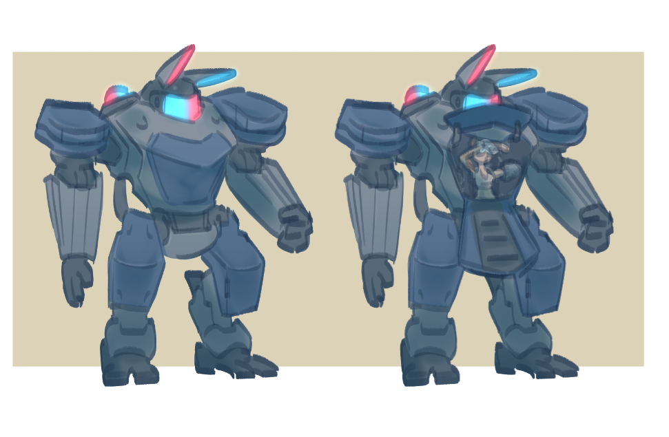
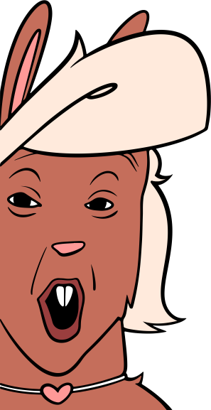

About the game
This game is still in development, and much is subject to change or improve, i strongly appreciate your continued support and wishlists, keep up with development on our socials!
What's this game all about?!
Pengu is a clueless and curious Penguin dashing through a new futuristic cyber-punk inspired world.
Become a wanted criminal (without realizing it) Make friends, fight robots, get in mechs, uncover secrets, and glide super duper fast!
What can you expect in
the full game?
- Tight engaging platforming
- Fast sonic-inspired movement and loop-de-loops
- A grand futuristic world, inspired by works such as Astro Boy, Cowboy Bebop, and Witch from mercury
- Colorful cast of furry characters of many different species
- Gorgeous pixel-art
- Many collectibles, and secrets to uncover
Many more cool gimmicks and gizmos to come!
Wishlist on steam
